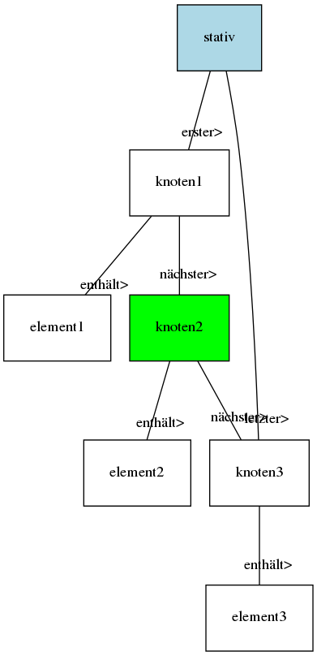
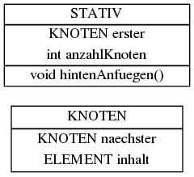
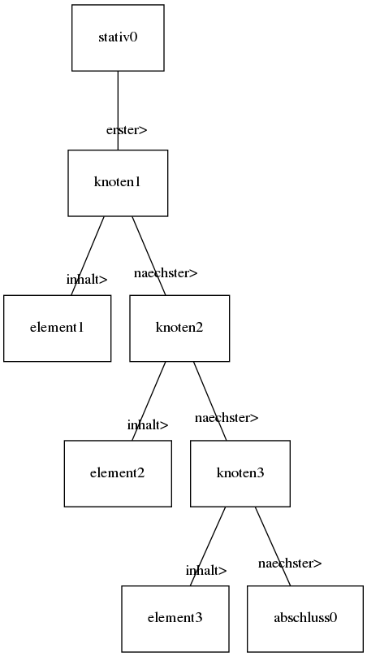
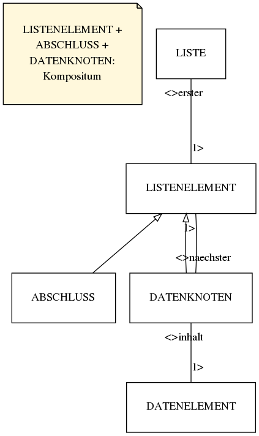
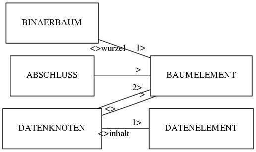
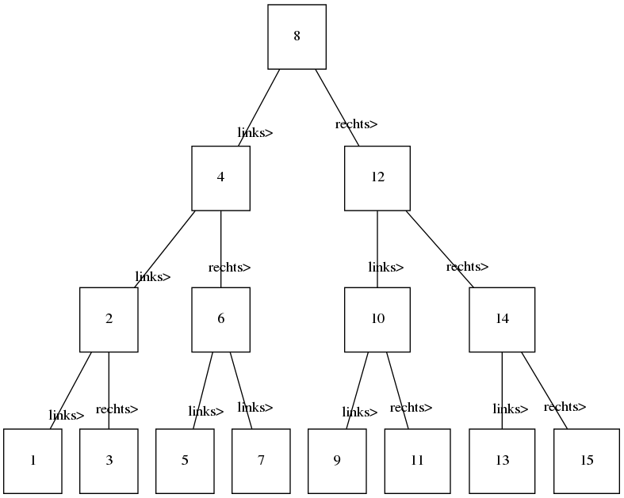
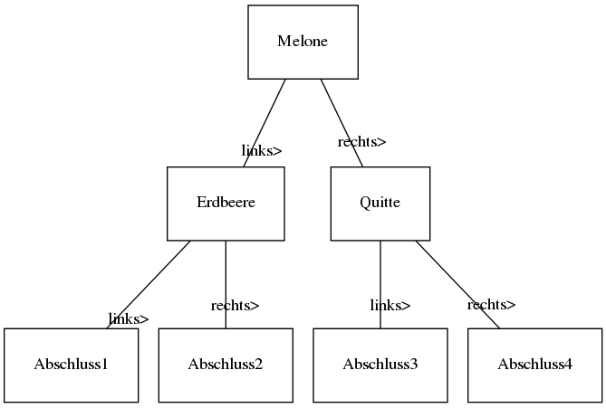
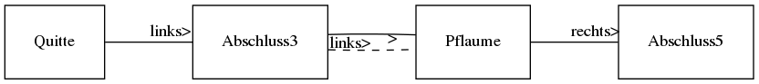

Verbesserungen bitte an .
27.9.2010
Beispiel: Polonaise im Klassenzimmer. Alex, der letzer Mann ist, soll den ersten, Frank, bitten, langsamer zu gehen. Lösung: Alex wendet sich an seinen Vordermann und bittet diesen langsamer zu gehen, wenn dieser der erste ist, oder die ganze Nachricht wiederum an seinen Vordermann weiterzugeben.
Pseudo-Code (mit Python-Syntax):
methode langsamer():
wenn selbst.vordermann:
selbst.vordermann.langsamer()
ansonsten:
selbst.geschwindigkeit--
Objektdiagramm (sich bitte runde Ecken denken!):
Klassendiagramm:
28.9.2010
Und das ganze in Java:
public void hintenEinfuegen(ELEMENT e) {
if (naechster == null) {
naechster = new KNOTEN(e);
// Anzahl der Knoten erhoehen
} else {
nachster.hintenEinfuegen(e);
}
}
4.10.2010
Klasse STATIV:
public void vorneEinfuegen(ELEMENT e) {
if (erster == null) {
erster = new KNOTEN(e);
} else {
KNOTEN knotenNeu = new KNOTEN(e);
knotenNeu.naechsterSetzen(knotenNeu);
erster = knotenNeu;
}
}
public KNOTEN vorneEntfernen() {
if (erster == null) {
return null;
} else {
KNOTEN weg = erster;
weg.setzeNaechsten(null);
erster = erster.gibNaechsten();
return weg;
}
}
public KNOTEN knotenGeben(int position) {
KNOTEN aktuell = erster;
for(int i = 0; i < position; i++) {
aktuell = aktuell.gibNaechsten();
}
return aktuell;
}
public KNOTEN knotenLoeschen(int position) {
if (position == 0) {
return vorneEntfernen();
} else {
KNOTEN weg = knotenGeben(position);
knotenGeben(position - 1).setzeNaechsten(weg.gibNaechsten);
weg.setzeNaechsten(null);
return weg;
}
}
5.10.2010
Buch S. 21/6
Eckiges Objektdiagramm:
Sequenzdiagramme:
(Benutzer)->stativ0: datenAusgeben() activate stativ0 stativ0->knoten1: datenAusgeben() activate knoten1 knoten1->element1: datenGeben() activate element1 element1-->knoten1: "\"Apfel gruen\"" deactivate element1 knoten1-->stativ0: "\"Apfel gruen\"" deactivate knoten1 stativ0->stativ0: Ausgabe mit System.out.println stativ0->knoten1: naechsterGeben() activate knoten1 knoten1-->stativ0: knoten2 deactivate knoten1 stativ0->knoten2: datenAusgeben() activate stativ0 activate knoten2 knoten2->element2: datenGeben() activate element2 element2-->knoten2: "\"Banane gelb\"" deactivate element2 knoten2-->stativ0: "\"Banane gelb\"" deactivate knoten2 stativ0->stativ0: Ausgabe mit System.out.println stativ0->knoten2: naechsterGeben() activate knoten2 knoten2-->stativ0: null deactivate knoten1 deactivate stativ0 stativ0-->(Benutzer): ""
Und in Java:
public void datenAusgeben() {
KNOTEN k = this.erster;
while(k != null) {
System.out.println(k.datenAusgeben());
k = k.naechsterGeben();
}
}
A(0) = 0
A(1) = 1
A(2) = 1 = 0 + 1
A(3) = 2 = 1 + 1
A(4) = 3 = 1 + 2
A(5) = 5 = 2 + 3
A(6) = 8 = 3 + 5
fib(n) = fib(n-2) + fib(n-1)
In Worten: Die n-te Fibonacci-Zahl ist die Summe ihrer beiden Vorgänger. Die 0-te Fibonacci-Zahl ist 0, die 1-te 1.
Rekursive Funktionen enthalten in ihrem Funktionsterm mindestens einmal den eigenen Funktionsbezeichner. Ein Funktionsaufruf endet nur dann nach einer endlichen Anzahl von Berechnungsschritten, wenn die Abbruchbedingung erfüllt ist.
fib(5) = fib(4) + fib(3)
= fib(3) + fib(2) + fib(2) + fib(1)
…
= 5
public int fib(int n) {
if (n == 0 || n == 1) {
return n;
} else {
return fib(n-1) + fib(n-2);
}
}
S. 24/3 a)
A(0) = 300
A(1) = 300 + 300 * 0,2 = 360
A(2) = 360 + 360 * 0,2 = 432
Allgemein:
A(t) = A(t-1) + A(t-1) * 0,2 = A(t-1) * 1,2
18.10.2010
Buch S. 25/5 a)
A(3) = 9
A(2) = 5
A(1) = 1
Allgemein:
A(n) = A(n-1) + 4, n > 1
Abbruchbedingung:
A(1) = 1
oder: A(n) = 1 + 4(n-1)
b)
A(3) = A(2) + 4
= A(1) + 4 + 4
= 1 + 4 + 4
= 9
Rekursive Funktionen: im Funktionsterm steht mindestens ein Mal der eigene Funktionsbezeichner
Rekursive Methoden: Innerhalb der Definition (Methodenrumpf); Aufruf der gleichnamigen Methode eines referenzierten Objekts
Bereits bekannt: hintenEinfuegen(ELEMENT e)
Rekursiver Aufbau in der Klasse KNOTEN:
public void hintenEinfuegen(ELEMENT e) {
if (this.naechster != null) {
this.naechster.hintenEinfuegen(e);
} else {
this.naechster = new KNOTEN(e);
}
}
Aufgabe: Implementiere anzahlKnotenGeben()!
STATIV:
public int anzahlKnotenGeben() {
KNOTEN aktuell = this.naechster;
int zaehler = 0;
while (aktuell != null) {
zaehler++; // Um eins hochzaehlen
aktuell = aktuell.naechsterGeben();
}
return zaehler;
}
(Benutzer)->stativ0: anzahlKnotenGeben() activate stativ0 stativ0->stativ0: Zähler erhöhen stativ0->knoten1: naechsterGeben() activate knoten1 knoten1-->stativ0: knoten2 deactivate knoten1 stativ0->stativ0: Zähler erhöhen stativ0->knoten2: naechsterGeben() activate knoten2 knoten2-->stativ0: knoten3 deactivate knoten2 stativ0->stativ0: Zähler erhöhen stativ0->knoten3: naechsterGeben() activate knoten3 knoten3-->stativ0: null deactivate knoten3 stativ0-->(Benutzer): 3 deactivate stativ0
STATIV:
public int anzahlKnotenGeben() {
if (this.erster == null) {
return 0;
}
return this.erster.anzahlGeben();
}
KNOTEN:
public int anzahlGeben() {
if (this.naechster == null) { // Abbruchbedingung
return 1;
}
return this.naechster.anzahlGeben() + 1;
}
(Benutzer)->stativ0: anzahlKnotenGeben() activate stativ0 stativ0->knoten1: anzahlGeben() activate knoten1 knoten1->knoten2: anzahlGeben() activate knoten2 knoten2->knoten3: anzahlGeben() activate knoten3 knoten3-->knoten2: 1 deactivate knoten3 knoten2-->knoten1: 2 deactivate knoten2 knoten1-->stativ0: 3 deactivate knoten1 stativ0-->(Benutzer): 3 deactivate stativ0
Das bedeutet:
⇒ Verwende eine kleine Kugel, die keinen Inhalt haben kann und hänge sie an den letzten Korb (Knoten).
Objektdiagramm:
Vorteil: Bei Methoden der Klasse KNOTEN keine Fallunterscheidung mehr notwendig.
Nachteil: Zwei Klassen (DATENKNOTEN und ABSCHLUSS)
STATIV:
public int anzahlKnoten() {
return this.erster.anzahlGeben();
}
DATENKNOTEN:
public int anzahlGeben() {
return this.naechster.anzahlGeben() + 1;
}
ABSCHLUSS:
public int anzahlGeben() {
return 0;
}
Klassendiagramm:
19.10.2010
public abstract class LISTENELEMENT {
public abstract int anzahlKnoten();
}
public class DATENKNOTEN extends LISTENELEMENT {
...
}
25.10.2010
LISTE:
public DATENELEMENT inhaltLetzterGeben() {
return this.erster.inhaltLetzterGeben(null);
}
DATENKNOTEN:
public DATENELEMENT inhaltLetzterGeben(DATENELEMENT e) {
return this.naechster.inhaltLetzterGeben(this.inhalt);
}
ABSCHLUSS:
public DATENELEMENT inhaltLetzterGeben(DATENELEMENT e) {
return e;
}
26.10.2010
LISTE:
public void listendatenAusgeben() {
System.out.println("In der Liste ist gespeichert: ");
erster.listendatenAusgeben();
}
DATENKNOTEN:
public void listendatenAusgeben() {
System.out.println(this.inhalt.datenGeben());
this.naechster.listendatenAusgeben();
}
ABSCHLUSS:
public void listendatenAusgeben() {
// Nichts zu tun ...
}
Weitere Methoden:
vorneEinfuegen()vorneEntfernen()hintenEntfernen()datenknotenGeben(String datenwert)8.11.2010
hintenEntnehmen der einfach verketteten Liste:class Liste {
// ...
public Datenelement hintenEntnehmen() {
Datenelement inhaltLetzter = erster.inhaltLetzterGeben(erster.inhaltGeben());
return entnehmen(inhaltLetzter.datenwertGeben());
}
public Datenelement entnehmen(String datenwert) {
// alten Knoteninhalt festhalten
Datenelement alterKnoteninhalt = datenknotenGeben(datenwert).inhaltGeben();
erster.entfernen(datenwert);
return alterKnoteninhalt; // Knoteninhalt zurueckgeben
}
public Datenknoten datenknotenGeben(String datenwert) {
return this.erster.datenknotenGeben(datenwert);
}
// ...
}
abstract class Listenelement {
// ...
public abstract Listenelement entfernen(String suchwert);
public abstract Datenelement inhaltLetzterGeben(Datenelement aktInhalt);
public abstract Datenknoten datenknotenGeben(String suchwert);
// ...
}
public Datenknoten extends Listenelement {
// ...
public Listenelement entfernen(String suchwert) {
// wenn datenwert von inhalt mit suchwert ueberein-
// stimmt, soll der Knoten entfernt werden
if (this.inhalt.datenwertGeben() == suchwert) {
return this.naechster;
} else {
this.naechster = this.naechster.entfernen(suchwert);
return this;
}
}
public Datenelement inhaltLetzterGeben(Datenelement aktInhalt) {
return this.naechster.inhaltLetzterGeben(this.inhalt);
}
public Datenknoten datenknotenGeben(String suchwert) {
if (this.inhalt.datenwertGeben() == suchwert) {
return this;
} else {
return this.naechster.datenwertGeben(suchwert);
}
}
// ...
}
public Abschluss extends Listenelement {
// ...
public Listenelement entfernen(String suchwert) {
return this;
}
public Datenelement inhaltLetzterGeben(Datenelement aktInhalt) {
return aktInhalt;
}
public Datenknoten datenknotenGeben(String suchwert) {
return null;
}
// ...
}
16.11.2010
vorneEinfuegenvorneEntnehmenhintenEinfuegenvorneEntnehmenS. 36 Nr. 6
Klassen:
29.11.2010
S. 39 Nr. 1 a)
Die Grundidee von heterogenen Listen ist, das man ja manchmal Listen mit verschiedenen Objekten haben möchte. Darum definiert man DATENELEMENT abstrakt und erstellt dann Unterklassen davon.
6.12.2010
Sortieren mögl. nach Zahl, Text, Datum
Wir wollen sortiertEinfuegen, sortiertSuchen (?), sortiertEntfernen (alle rekursiv)
In DATENKNOTEN:
public DATENKNOTEN sortiertEinfuegen(DATENELEMENT inhaltNeu) {
if (inhalt.compare(inhaltNeu)) {
DATENKNOTEN k = new DATENKNOTEN(inhaltNeu);
k.naechsterSetzen(this);
return k;
} else {
naechster = naechster.sortiertEinfuegen(inhaltNeu);
return this;
}
}
In ABSCHLUSS:
public DATENKNOTEN sortiertEinfuegen(DATENELEMENT inhaltNeu) {
DATENKNOTEN k = new DATENKNOTEN(inhaltNeu);
k.naechsterSetzen(this);
return k;
}
In DATENELEMENT:
public abstract boolean istKleiner(DATENELEMENT e);
Neue Klasse ANZUG:
class ANZUG extends DATENELEMENT {
public boolean istKleiner(DATENELEMENT e) {
return groesse < ((ANZUG) e).groesse;
}
}
7.12.2010
ZEITSCHRIFT:
private String name;
public boolean istKleiner(DATENELEMENT vg) {
return name.compareTo(((ZEITSCHRIFT) vg).name) == -1;
}
14.12.2010
Bäume zählen wie die Listen zu den sehr häufig verwendeten Datenstrukturen in der Informatik. Wie Listen bestehen Sie aus Knoten. Allerdings hat ein Knoten nicht nur einen, sondern viele Nachfolger. So ergibt sich eine Struktur wie z.B. in Stammbäumen.
Binärer Weihnachtsbaum
(XKCD's Tree by Randall Munroe; euch allen übrigens an dieser Stelle frohe Weihnachten und einen guten Rutsch!)
In Binärbäumen hat jedes Objekt also höchstens zwei Nachfolger.
Wenn alle Knoten eines Binärsbaums ausgegeben werden sollen, so gibt es drei Möglichkeiten:
20.12.2010
Klassendiagramm für einen Binärbaum:
Baumelement und Datenelement sind abstrakt. In unserem Fall (Aufgabe im Buch) erstellen wir folgende Unterklasse von Datenelement:
10.1.2010
Preorder ausgeben:
Binaerbaum:
wurzel.datenAusgeben();
Datenknoten:
inhalt.datenAusgeben();
links.datenAusgeben();
rechts.datenAusgeben();
Abschluss: nichts machen
10.1.2010
S. 62 oben
S. 62 oben
nicht geordnet:
Suche nach 13: maximal 15 Vergleiche.
geordnet:
Suche: maximal 4 Vergleiche
24.1.2010
funktion baumErzeugen(liste)
wenn nicht liste.leer()
linkeHaelfte, rechteHaelfte = liste.splitten()
knotenNeu = linkeHaelfte.letzterEntnehmen()
knotenNeu.naechsterLinks = baumErzeugen(linkeHaelfte)
knotenNeu.naechsterRechts = baumErzeugen(rechteHaelfte)
return knotenNeu
ende
return neuer Abschluss
ende
7.2.2010
Ausgangssituation:
Nun soll eine Pflaume eingefügt werden.
Schritt 1 (nur der Teil mit der Quitte):
Schritt 2:
15.3.2010
Graphen können folgende Eigenschaften besitzen:
Sie können die folgenden Formen einnehmen:
| Augsb. | Bob. | Inningen | Königsb. | Merching | Mering | Obo. | |
|---|---|---|---|---|---|---|---|
| Augsburg | - | -1 | 7 | 12 | -1 | -1 | -1 |
| Bobingen | - | 5 | 5 | -1 | -1 | 6,5 | |
| Inningen | - | 8,7 | -1 | -1 | -1 | ||
| Königsbrunn | - | 10,5 | 9,1 | 4,5 | |||
| Merching | - | 3 | -1 | ||||
| Mering | - | -1 | |||||
| Oberottm. | - |
21.3.2010
| A | B | C | D | |
|---|---|---|---|---|
| A | - | w | w | f |
| B | w | - | f | w |
| C | w | f | - | w |
| D | f | w | w | - |
Oder:
| A | B | C | D | |
|---|---|---|---|---|
| A | 0 | 1 | 1 | 0 |
| B | 1 | 0 | 0 | 1 |
| C | 1 | 0 | 0 | 1 |
| D | 0 | 1 | 1 | 0 |
⇒ Adjazenzmatrix symmetrisch
| A | B | C | D | |
|---|---|---|---|---|
| A | - | f | w | |
| B | w | - | f | |
| C | f | f | - | |
| D | f | w | w | - |
| A | B | C | D | |
|---|---|---|---|---|
| A | -1 | 10 | 40 | -1 |
| B | 10 | -1 | -1 | 20 |
| C | 40 | -1 | -1 | 5 |
| D | -1 | 20 | 5 | -1 |
| A | B | C | D | |
|---|---|---|---|---|
| A | -1 | 40 | -1 | -1 |
| B | 10 | -1 | -1 | -1 |
| C | -1 | -1 | -1 | -1 |
| D | -1 | 20 | 5 | -1 |
Feststellung: Die Adjazenzmatrizen ungerichteter Graphen sind symmetrisch.
Matrix!